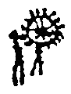

Falando de si numa entrevista¹, ou ainda de seu trabalho enquanto romancista, João Gilberto Noll diz que é fundamentalmente um materialista em busca da transcendência. Lançou então um conflito de contínua irresolução para comentar sua própria literatura. É possível dizer que sua prosa constrói o que chamaremos aqui de narrativas do vislumbre, do acontecimento que se percebe como um vulto, de tempo ocioso, daquilo que corre nas horas lentas do dia, que passam rente às brechas e alternam entre penumbras, da derrocada comercial nos centros da cidade quando a última porta de aço é desenrolada e algo se extingue: logo, quando algo mais surge em meio ao fluxo obcecado das metrópoles. Algo do lugar do inusual, então, que atravessa o comum como flecha saída de um arbusto indistinto.
Em Harmada, somos apresentados a uma personagem que vaga por espaços diversos de uma cidade qualquer: do mar, matagal, teatro, asilo, de todas essas orlas possíveis. Nesses lugares, a cada relação costurada com um novo corpo no caminho, Pedro Harmada, de sobrenome capital, abre outra dobra num espaço sensorial. A estrutura que nutre a narrativa é circular. A fúria desse corpo essencial é a inconsistência secular que nos ronda e não termina. Se partimos de uma leitura entregue, começamos o romance vendo alguém deitado na terra. Se começamos este livro suscetíveis a um tipo de alucinação (literária) que envolve a produção de imagens internas, e mais ainda, a produção de imagens internas das quais o próprio corpo participa, então começamos Harmada nós mesmos deitados ali. Sente-se o contato com a terra molhada: primeiro a planta dos pés, depois o restante do corpo, talvez até a disseminação das primeiras raízes.
Ainda no início, um menino que aparece de repente, e desaparece tão de repente quanto em meio à mata, nos faz pensar a natureza do vento quando lida – ele é perseguido por um vento miúdo. Um vento mensurável, o farfalho e uma disposição de espaço que quase não se sustenta, o chão em suspensão. O cenário construído é repleto de uma lucidez acesa que de tão real quebra a própria camada do palpável, de construir uma imagem que permaneça inapreensível em sua presença.
A prosa em questão seria a das aparições e ausências em que coisas surgem e somem na mesma medida, com um fio central condutor que nos leva com os saltos; somos levados até as projeções, que saem narrativamente tal qual um fluido que embebe a página. O errante, fantasma da narrativa, vive uma mutação num lugar em que tudo que vive é um relâmpago. Ele parte em direção à terra marcada por fronteira, e além: a terra própria que circula em torno si mesma, no ciclo inalterável de origens e extinções, do qual germina todo corpo. Pedro Harmada é um ex-ator através de um país. A capital, Harmada. Um país que se sente latinoamericano pelo teor de seu céu alaranjado e o suor na palavra.
O homem que diz ser Pedro Harmada ruma muitas vezes sob o sol como única presença viva, o céu alaranjado como figuração de uma preguiça criativa em sua demora, no apertar dos olhos em que quase se vê mas não ainda. Seu reencontro com a atuação se dá enquanto está internado numa casa comunitária, em que passa a ser orador, relator do que conta, de tudo que lembra e inventa. A contraparte de Harmada é Cris, uma menina que, como todos, chega de repente ao romance, e se reencarna em atriz e é um lampejo dramatúrgico na vida do texto, de Pedro, deslocando a narrativa numa direção bacante, em sua postura, em seus próprios relatos, direção de fervor. Em certo momento evocador da flama que é imutável nas dimensões do romance, Cris falará, num dos vislumbres de relatos, sobre o calor da noite que
Parece que o romance vive entre um sono e outro, e, diferente do comum às narrativas gerais, não vemos (quase) nada, de sua vida desperta. Seria então um lapso? O texto que o conduz segue em estado de liturgia se pensarmos a transfiguração coagulada das identidades, Pedro Harmada como o ator total que não só torna-se outro por si mas por uma multidão inteira. É em algum plano que tudo pode chegar em lugar qualquer, o caminho sempre o do trêfego lagarto na gruta final, religioso de fato, matéria que luta por romper a matéria ainda que a adore: o romance que quer romper a própria narrativa. O Templo da Mansidão frequentado pelos moribundos no livro é a casa do Tempo.
(No filme Memoria, de Apichatpong Weerasethakul, a protagonista persegue alguma materialidade na transcendência (um som). Em dado momento ela encontra um homem ou ele aparece; aparição. Enquanto conversa com ele, o homem, empunhando uma faca, descama um peixe morosamente, os dois cercados por uma mata extensa e aparentemente a pequena cabana que pertence ao homem é o único indicativo humano do local. De repente ele alcança uma pedra qualquer na terra aos seus pés, e conta a história daquela específica pedra. Tudo absorve tudo. O homem, que entende a linguagem dos macacos, é um contador do tempo das coisas, é um depositário da memória total. Então, ela pergunta se lembra também de seus sonhos. Ele responde que não, que nossa espécie nunca sonha. Ela pergunta o que acontece então quando dorme. Ele responde nada. Ela pede que mostre. Ele deita à relva, marca a terra com o corpo, e dorme. E morre. Então, acorda.)
Dos elementos, mais que o próprio tempo, aqui o vento é que designa cada refluxo narrativo, cada curva e novo caminho traçado; percorrido novamente, cada novo gesto é marcado pelo vento, da matéria mesma daquele, miúdo, que seguia o menino. Indo além, através de seus relatos, invenções ou não, relatos apenas, é aí que o vento entra em harmonia com o espaço: através da laringe, e aí que o sumo irrompe, quando estoura o fator que produzia os relatos: a palavra. As histórias contadas ali tornam-se a única farsa real dentro de todas as farsas.
(Algo interessante de se dar nota é que, em algum momento de 1997, Noll fez uma leitura com trechos de dois de seus romances, Harmada e A Céu Aberto, por ocasião do projeto "O escritor por ele mesmo" que, para nossa sorte, foi gravada e preservada². Neste dia, tornou-se ele o contador. Neste dia, então, como podemos ouvir, ele toma para si uma posição que a princípio é estranha mas aos poucos se revela: a leitura se assemelha a uma ladainha religiosa em sua mansidão, em sua quietude, com a frequência de uma missa transtornada pagã, de um ritual que planifica o ritmo das palavras e produz, a partir de ritmo e repetição, algum caráter de fascínio, de indução a coisa qualquer.)
O romance adentra uma mata de vaguidão total, desaparece nela, temporal e fisicamente. A narrativa é transfigurada constantemente pela trança da linguagem que forma o enredo. A criança que desaparece na mata, ao início, é tudo que existiu e ainda existirá nesse suposto país das eternas suspeitas que reside entre um dia alaranjado e uma noite que é apenas o dia em suspensão. Para melhor falar da perambulação onírica de Pedro Harmada, pensemos a partir de Canoas e Marolas, outro livro do autor:
Noll já comentou algumas vezes sobre seu fascínio por Mastroianni, o ator total: da falta absoluta. Afinal, os verdadeiros seres se frutificam na ausência. Colocar o corpo num lugar em que cada personagem que chega adiciona mais uma centelha fragmentária ao suposto todo. Aqui não existe um narrador não confiável, o romance inteiro é não confiável se encarado a partir da realidade externa que quer, a todo momento, invadir o livro. Só importa então a postura do sonhador que, no sonho, crê em tudo sem sequer cogitar interrogações por maiores que sejam os absurdos, que aqui são os do Tempo. Plausíveis pareciam o vento desnorteado e o furor das águas que caíam.